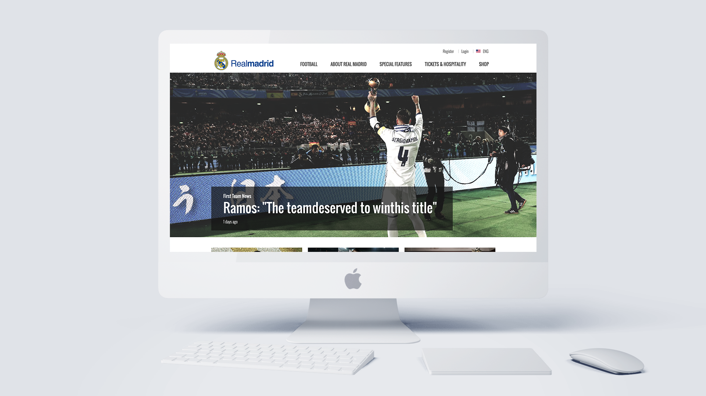

HS
REAL MADRID 개인 프로젝트
-
Technology
HTML, CSS, jQuery
-
DATE
2016.10~ 2017.01
-
ROLE
기획, Design, HTML, CSS, jQuery
- 개인프로젝트로 진행을 한 포트폴리오입니다.
- 플러그인 없이 하드코딩으로 제작하였습니다.
- UI/ UX를 개선, 메인페이지 반응형 페이지로 구현 하였습니다.
- 웹접근성에 준수 하였습니다.
- W3C 마크업 검사, Outliner, SEO 등 웹 표준에 준수
하였습니다.
프로젝트 상세 설명

사용자 환경에 맞춰 최적화되는 반응형웹
다양한 디바이스와 해상도에 맞게 최적화되는 반응형웹으로
개발하여
여러 환경의 사용자에게 동일한 사용자경험을 제공하며, 사이트의
유지관리 효율성을 높였고
검색엔진에 친화적이게 제작되었습니다.
-
웹 표준 K-WAH4.0 준수율 100.0%,
OUTLINER를 통한 구조 확인 가능- 모두가 이용 할 수 있도록 웹 접근성을준수하였습니다. - <h1~5> 헤드라인 태그의 이용 - <img> 대체텍스트 - <a> title 등 - 대한민국 웹 접근성 검사 100.0%로 맞췄고 - HTML5 OUTLINER를 통한 구조 확인이 가능하게 만들었습니다.
-
웹 접근성
- 입력장치 접근성의 의거하여 tab으로도 이동할 수 있도록 구현하였습니다. - 반복영역을 건너뛸 수 있는 수단으로 Skip navigation을 구현하였습니다. - 쉬운 네비게이션을 구현 하였습니다. - 키보드, 마우스로 해당 컨트롤이 초점을 받았을 때 시각적으로 구별 할 수 있도록 하였습니다. - 저시력, 시각장애인, 노인들도 콘텐츠를 인식하도록 제공하였습니다. - 사용자 요구에 의한 재생 컨트롤을 만들었습니다.
-
크로스 브라우징
- 이용자가 선호하는 브라우저에서 동일한 화면을 보실 수 있도록 구현하였습니다. - IE9,8의 문제점(이미지 border 생성, 폰트사이즈,여백값등)을 조건 주석문으로 해결 하였습니다.
-
슬라이딩 윈도우
- jQuery를 사용하여 슬라이딩 윈도우를 구현하였습니다. - 슬라이딩 윈도우를 구현하기위해 prpend, append 메소드를 사용 무한루프가 되도록 구현하였습니다. - 영역을 400% 설정하고 이미지들은 25%설정하여 화면에 100%로 보이도록 구현하였습니다. - 메인화면 하단에 있는 영역은 'setInterval' 이벤트를 설정, 3초 마다 자동 슬라이딩 구현하였습니다.
-
모달 팝업
- jQuery를 사용하여 모달 팝업을 구현하였습니다. - click 이벤트 jQuery 이벤트를 사용하여 클릭한 이미지가 팝업 되도록 하였습니다. - 팝업되기 전 사진이미지에 hover를 하면 cursor:zoom-in 팝업 후엔 cursor: zoom-out을 사용해 유저에게 직관적으로 보이도록 하였습니다. - 팝업 되었을시 body 영역이 스크롤 되지 않도록 overflowY: hidden을 하였습니다. - 사이즈 다른 이미지들이 화면 가운데 위치하기 위하여 left: 50%, top: 50%, transform: translate (-50%, -50%)을 사용하였습니다.
-
아코디언
- jQuery를 사용하여 아코디언을 구현하였습니다. - slideToggle 이벤트를 사용하여 공간을 효율적으로 사용하였습니다. - 유저가 더 직관적으로 이해하기 위해 화살표 아이콘을 넣었고 toggleClass를 사용하여 클릭시 회전이 되도록 개발 하였습니다.
-
jQuery 기능
- 이외에도 알림창, 탭메뉴, video control, tootip. - back top top 버튼, google maps를 구현하였습니다.